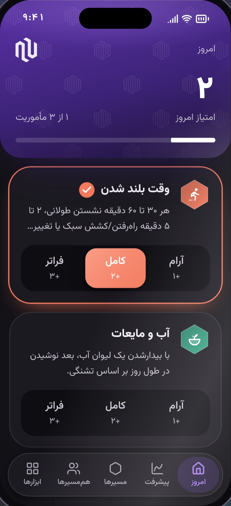
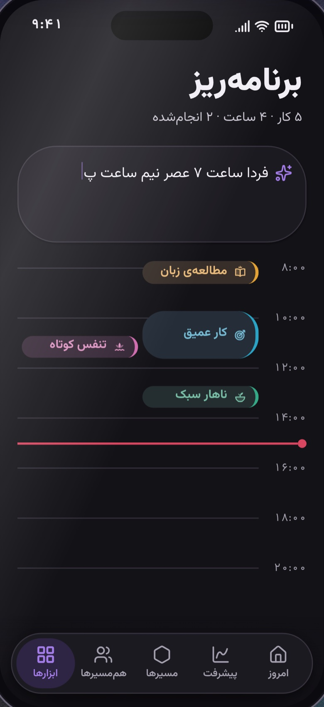
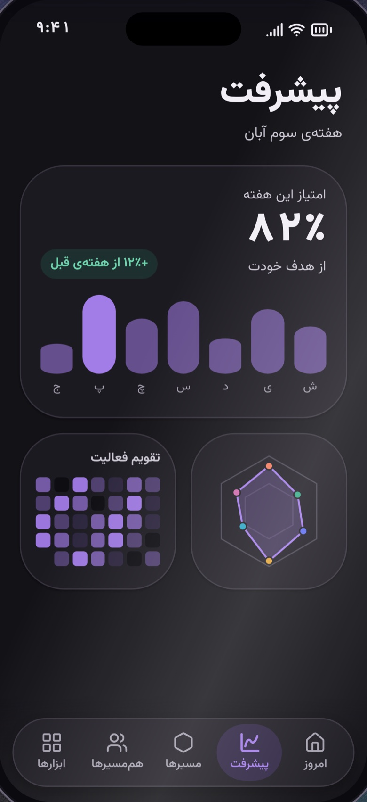
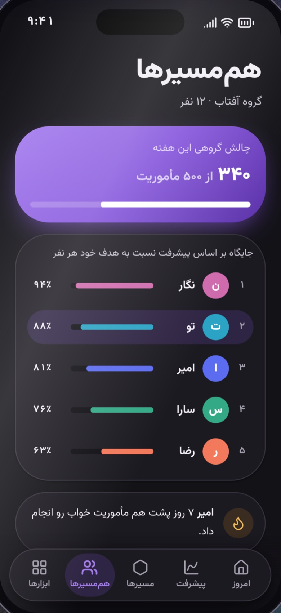

Full-stack products, built end to end.From database to interface.
Computer Engineering student at Politecnico di Torino. I build web apps and tools for AI agents, and I handle the data model, the API, the interface and the deployment.
One home for daily growth.Installed from the browser.
Daily missions across six paths, with planning, progress charts, personal tools and a tribe. Members add it to the phone home screen with no app store download.

Today

Planner

Progress

Tribe
Creator and developer · Next.js, TypeScript, PostgreSQL, Prisma
71pages
24API routes
77database models
Safety before missionsAn onboarding step hides missions that are unsuitable for a member.
Private answers stay privateMood, journal and safety answers never reach anything the tribe can see.
A fair leaderboardMembers rank by progress toward their own goal, not by raw totals.
In early validation with club members, so I do not report user figures yet. Screens show the public preview with demonstration content. Source is private.
Your AI agent is lost in your codebase.Give it a map.
armap ranks files with PageRank over their dependency graph and hands the agent a map of about 700 tokens before it starts. It needs no compiler, language server or runtime dependencies.
# Repo map: 108 source filesTop-level: app/ 61, lib/ 22, components/ 10
lib/prisma.ts (used by 27)
L22 export const prisma =
lib/auth.ts (used by 16)
L20 export async function hashPassword(…)
Remote conducting between a Meta Quest headset and musicians in a browser rehearsal hall. I built the shared hall, avatars, seating, playing poses and the connection quality display.
Team project · Unity, C#, Node.js, WebRTC · Private source
Jetaime
Cost, price list and invoice tools plus a website for a pastry brand. A restricted database role keeps costs and recipes out of the website's reach.
In development · Next.js, PostgreSQL, Drizzle, Turborepo · Private source